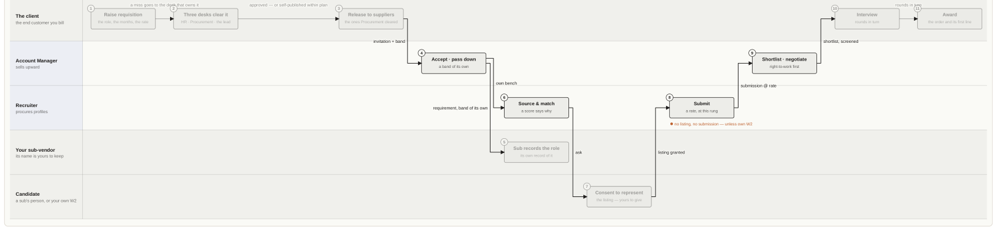
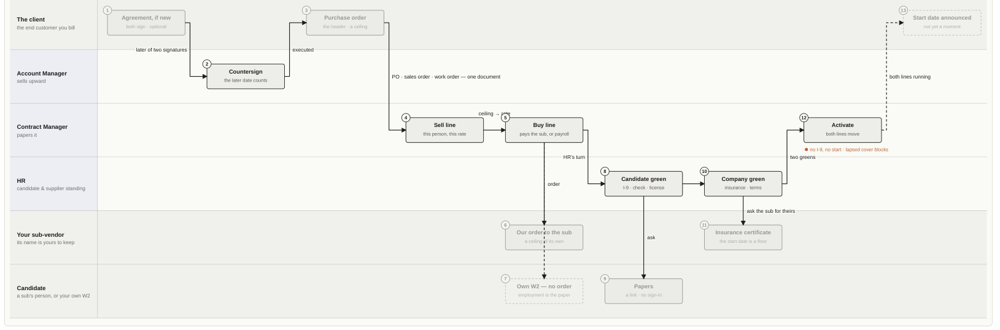
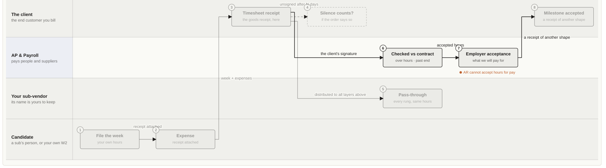
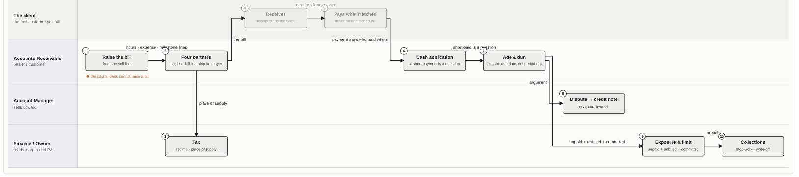
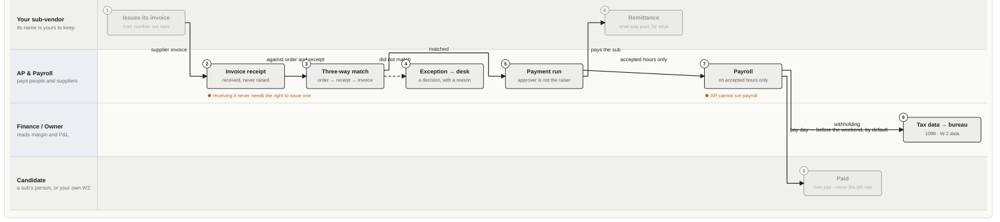
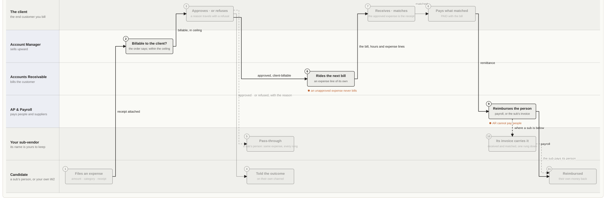
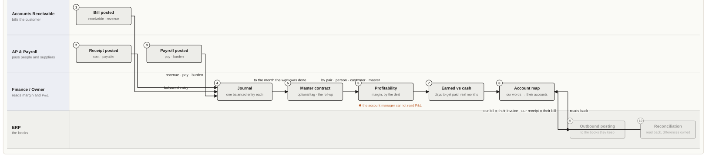
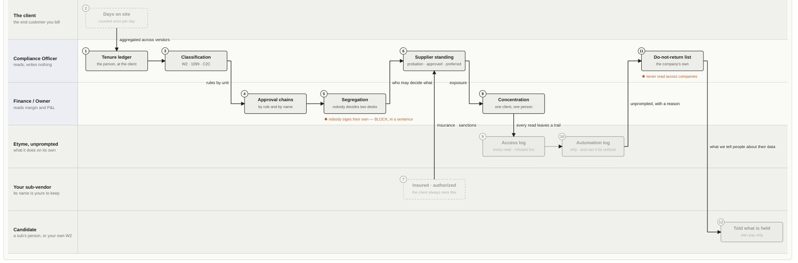

Documentation · The operating model, from one desk · 4 of 10
Prime vendor
Sells to the client. Buys from a sub-vendor by order, or its own W2 with none.
Position on a deal
Sells to the client on a purchase order the client raises and it reads as its sales order. Buys from a sub-vendor on an order of its own, or brings its own W2 with no order. Both sides of a placement are its to administer, and the sub- vendor’s name is its to keep.
Desks · L1
Owner Admin Recruiter Resource Manager Account Manager HR Contract Manager Accounts Receivable AP & Payroll Finance Compliance Officer
The base drawing. A prime is the party that trades with all three counterparties — a customer above, supply below, and the person the work is about — which is why every other party in this set is described as this drawing with lanes removed or a leg missing. The founder’s operating model was stated from this desk: recruiters procure and submit, account managers sell upward, contract manager and HR make both sides compliant, the client signs the week, the firm bills its customer, pays its people and its suppliers, and ownership reads the margin. Shaded lane — a party outside the firm. Anything crossing into it is a document a counterparty reads. Blue-edged lane — one of this party’s own desks. Its boxes are solid; everyone else’s are faded but still there, because the stream does not change — only who is looking. Labelled arrow — the artifact that moves: requisition, submission, order, ti
L1.1 · value stream · L2
Source to contract

Integration points
1 Raise requisition → SAP S/4
A station is an integration point where a document can come from or go to an edge system — SAP S/4, HCM or Concur. There is no separate flow for them: Etyme keeps the record; they keep theirs.
Stations · L3, with the desk’s task and the system’s rule · L4
| # | Station | Desk | What happens | System rule |
|---|---|---|---|---|
| 1 | Raise requisition SAP S/4 | The client | the role, the months, the rate | records |
| 2 | Three desks clear it | The client | HR · Procurement · the lead | records |
| 3 | Release to suppliers | The client | the ones Procurement cleared | records |
| 4 | Accept · pass down | Account Manager | a band of its own | records |
| 5 | Sub records the role | Your sub-vendor | its own record of it | records |
| 6 | Source & match | Recruiter | a score says why | records |
| 7 | Consent to represent | Candidate | the listing — yours to give | records |
| 8 | Submit | Recruiter | a rate, at this rung | no listing, no submission — unless own W2 |
| 9 | Shortlist · negotiate | Account Manager | right-to-work first | records |
| 10 | Interview | The client | rounds in turn | records |
| 11 | Award | The client | the order and its first line | records |
Etyme says · what SAP calls it
| Etyme says | What SAP calls it | Where they meet, and where they part |
|---|---|---|
| Requisition | a purchase requisition · a job posting | Same object. Etyme clears it through three desks — HR reads the role, Procurement audits the suppliers, the cost-center lead signs the money; SAP puts a release strategy on it. |
| Rate band | a rate guideline · a price on the vendor record | Both keep the price per supplier where no other supplier can read it. Etyme puts it on the invitation. |
| Supplier release | a request for quotation to the source list | “These vendors may quote.” The program office decides, never the hiring manager. |
| Bench listing — consent to be marketed | — | No SAP word. Fieldglass has a worker profile; nobody in SAP consents to be sold. The invariant with no counterpart. |
| Submission | a quotation · a job-seeker submittal | A quotation at a rate, one per rung of the chain — two rows, one chain. |
| Interview | an interview | Only whoever is hiring may set up or decide a round. |
| Award | creating the purchase order · creating the work order | In SAP the award *is* the order. Etyme’s award now raises the order and writes the contract as its first line. |
| Requirement going down a chain | a tiered supplier · subcontracting | The prime retypes the role for its sub under a band of its own; the sub never learns the end client unless the agreement requires disclosure. |
- Step 4 — Maren takes it on and passes it down the panel › band of its own
- Step 5 — Computer Systems takes it on and asks its sub-vendor › against itself so a sub has somewhere to submit
- sends it to CloudEPA at a third band, $20 below what Auralis will pay
- A GSI puts its own employee in front of a client › bench, because Ardent employs him
- records it as an internal submission, because the person is Ardent’s own W2
- never asked Arun for a bench listing, because his employment is the consent
- tells Arun he has been put forward, and to which client, in a sentence
- tells him rather than asks him — there is nothing on it to accept
- logs the read of Arun’s record the way it logs every other
- A staffing vendor answers the same seat the old way, and both stand › who granted it a listing
- Northbend Athletic interviews a candidate, from the desk that received her › round one from the candidate’s row, with the body the form builds
- the submission now reads as interviewing
- the supplier’s people are told in the app, and the candidate by email
- the seeded world › has at least one interview round still ahead of now
- never records a finished round as happening in the future
- never books a round on a Saturday or a Sunday
- tells two readers in different zones the same moment in their own words
- Northbend Athletic writes to Pinnacle about a role, and Pinnacle answers › a thread with Pinnacle from the role, with its first question
- Pinnacle's people are told in the app, in a line that says who asked and about what
- Pinnacle sees the thread as one Northbend Athletic opened with them, and answers on it
- the answer reaches the desk that asked, and the rest of Pinnacle is not told about its own reply Northbend Athletic cannot write to a firm that is not on the role, and is told to invite them first Mei-Lin, on Pinnacle's bench, cannot read what the two firms say about her
- Step 1–2 — the chain exists, and nobody sees past their neighbors › them companies
- ETYME_TEST_DB=etyme_test_walk npx vitest run -c vitest.integration.config.ts __integration__/full-spine.test.ts
- sends it to Computer Systems at a Step 6 — CloudEPA puts Priya forward › answered
- accepts, and records the role Step 8 — Computer Systems forwards her to Auralis at $135 › its own rate, linked to the first
- lands on a fresh Auralis requirement rather than the requisition that was approved
- ETYME_TEST_DB=etyme_test_walk npx vitest run -c vitest.integration.config.ts __integration__/internal-submission.test.ts
- lets Ardent submit Arun, who is on nobody’s records Lena’s as a network submission, because Vertex does not employ her
- puts an employee and a bought consultant on the same seat, which is the whole point
- still refuses a firm that puts forward somebody it neither employs nor has a listing for
- Employing somebody does not override what they said about a client › Ardent employs her, because Cavanaugh Glassworks is on her list
- says nothing about who else is involved or why
- writes no submission for her at all
- lets Vertex submit Lena, The rule has a door, so somebody can actually pick an employee › own payroll, alongside its bench
- ETYME_TEST_DB=etyme_test_walk npx vitest run -c vitest.integration.config.ts __integration__/interview-rounds.test.ts
- a client proposes a second round cannot be proposed while the first is still ahead
- a supplier cannot start a round on its own submission
- the supplier confirms for the candidate, and the person who asked is told
- the client says she goes through; the supplier hears the outcome and never the notes
- ETYME_TEST_DB=etyme_test_walk npx vitest run -c vitest.integration.config.ts __integration__/live-pipeline.test.ts
- says UTC out loud rather than silently assuming it when nobody set a zone
- names the people who will be in the room
- offers a proposed round more than one slot to choose between
- offers two proposed slots that are not the same slot twice
- ETYME_TEST_DB=etyme_test_walk npx vitest run -c vitest.integration.config.ts __integration__/supplier-thread.test.ts
- the program desk opens both sides read the same thread, each note marked with the firm that wrote it
- Pinnacle cannot open a thread with Northbend Athletic; it is told to submit or answer the invitation instead
- a firm that was never asked to work the role cannot read the thread, and is not told it exists
- ETYME_TEST_DB=etyme_test_walk npx vitest run -c vitest.integration.config.ts __integration__/two-hop-chain.test.ts
- has four parties, three of lets Computer Futures see Auralis Software above and CloudEPA below
- lands on Computer Systems, which is who CloudEPA
- creates a second submission with
- refuses Maya even though
- offers Ardent the people on its
- Step 14a — the name below the rung Auralis pays, and the term that opens it › Systems reading its own supply chain by name, because it is its own
- tells whoever is choosing that these need no bench listing, in a sentence
- never offers Vertex somebody else’s employee
- does not offer a consultant on the bench as somebody we employ
- Cavanaugh Glassworks awards the employee, and Ardent gets a contract pair with nobody underneath › lets Cavanaugh Glassworks award Ardent’s own employee
- writes the sell contract Ardent bills Cavanaugh Glassworks under
- writes the buy leg as payroll, with no supplier under Ardent
- raises no purchase order, because nobody raises one to their own employee
- round two is numbered two
- a candidate already through round one can be given round two straight away
- the candidate accepts a time from her own page, in her own name, and both firms are told
- she can say she cannot make any of them, in a sentence, and the desk is told what to do
- reaches a live client requirement through a supplier that submitted onward
- never charges the client what the bench vendor charged the prime
- can be run twice without building a second copy of the pipeline
- Northbend Athletic's own Discussion on the role stays at Northbend Athletic; Pinnacle's list never shows it
- a question about Mei-Lin goes to Pinnacle, who sent her, and to no other firm
- asking again lands on the same thread rather than a second one
- leaves Computer
L1.2 · value stream · L2
Contract to onboard

Integration points
3 Purchase order → SAP S/4 5 Buy line → HCM 7 Own W2 — no order → HCM 8 Candidate green → HCM
A station is an integration point where a document can come from or go to an edge system — SAP S/4, HCM or Concur. There is no separate flow for them: Etyme keeps the record; they keep theirs.
Stations · L3, with the desk’s task and the system’s rule · L4
| # | Station | Desk | What happens | System rule |
|---|---|---|---|---|
| 1 | Agreement, if new | The client | both sign · optional | records |
| 2 | Countersign | Account Manager | the later date counts | records |
| 3 | Purchase order SAP S/4 | The client | the header · a ceiling | records |
| 4 | Sell line | Contract Manager | this person, this rate | records |
| 5 | Buy line HCM | Contract Manager | pays the sub, or payroll | records |
| 6 | Our order to the sub | Your sub-vendor | a ceiling of its own | records |
| 7 | Own W2 — no order HCM | Candidate | employment is the paper | records |
| 8 | Candidate green HCM | HR | I-9 · check · license | records |
| 9 | Papers | Candidate | a link · no sign-in | records |
| 10 | Company green | HR | insurance · terms | records |
| 11 | Insurance certificate | Your sub-vendor | the start date is a floor | records |
| 12 | Activate | Contract Manager | both lines move | no I-9, no start · lapsed cover blocks |
| 13 | Start date announced | The client | not yet a moment | records |
Etyme says · what SAP calls it
| Etyme says | What SAP calls it | Where they meet, and where they part |
|---|---|---|
| Agreement · MSA | an outline agreement · a sales contract | Optional since 2026-09-18. Both signatures, and the date that matters is the later one. SAP has no countersignature of its own; that lives in a contracts tool. Never “master agreement” on a screen — “master contract” is the profitability roll-up, a different thing. |
| Purchase order · sales order · work order | one order, mirrored: a PO on the buyer, a sales order on the seller | One row, three names. The header: counterparty, ceiling, dates, terms, the four partner roles. |
| Sell line — bills the customer | a sales-order item, one per worker | A line on the order: this person, this rate, this site. What the firm bills from. |
| Buy line to a sub-vendor — pays by invoice receipt | a service item on our order to the vendor | Draws down our order to the sub. Rhythm and terms read from the document; the dates are the line’s own, because a line is a person. |
| Buy line to own W2 — pays by payroll | a hiring action, not a vendor record | No order to your own employee. SAP files the person under HR, never under purchasing. |
| Supplier onboarding — four desks | supplier registration and qualification | Etyme walks department lead, Procurement, HR and Finance in order, each verifying only its own items. |
| Work authorization · I-9 | a residence-status record on the person | BLOCK. The form has an edition; an I-9 with nothing behind it is not held. |
| Certificate of insurance | a supplier certificate with a validity window | Etyme reads the start date as a floor — cover beginning next month does not cover somebody starting this week. |
| Compliance · Agreement · Proof | — | Etyme’s three purposes decide behavior. SAP scatters them across HR, procurement and document management. |
| Activate · run: ETYME_TEST_DB=etyme_test_walk npx vitest run -c vitest.integration.config.ts __integration__/agreement-lifecycle.test.ts a master agreement gets a term, a signature and a trail › a recruiter cannot change the payment days or the margin floor, and is told who can a client reading the supplier’s agreement is told whose terms they are, and cannot change them changing the payment days records what they were before, who changed them and why an amendment writes an automation log naming what moved and why re-saving the same payment days is refused rather than written to the trail as an amendment a signature can no longer be typed in as a bare date — the refusal says to record who signed recording the term says in a sentence when the agreement runs out and how many days that is recording the executed document keeps the file and its name on the agreement, not in somebody’s email a link that is not a link is refused, and the refusal says what a link looks like · run: ETYME_TEST_DB=etyme_test_walk npx vitest run -c vitest.integration.config.ts __integration__/award-order.test.ts A client awards, and the order it will quote exists the same second › the purchase order the client will read, with the contract as its first line the client reads it as a purchase order and the supplier reads the same row as its sales order the order’s ceiling is what the requisition was approved at, never a third number says where the ceiling came from, in a sentence anybody can audit a line never disagrees with its header on the day it is written runs a month past the last day of the work, so the final invoice has an order to quote | the hire · the release one signature does not execute an agreement — it says which side still owes a counter-signature an agreement that renews itself rolls its end date on instead of lapsing, and the trail says it did the same side cannot sign twice, and the refusal says to amend rather than sign again a signature with no title is refused, because whether the signer had authority is the first thing a recruiter cannot end an agreement either anybody asks the counter-signature executes the agreement, dated the later of the two, and says nothing here on verified it the history answers what the payment days were before they were changed, and what they are now asking what the terms were before the agreement existed returns nothing rather than today’s terms a client reading the history sees the payment days and never the supplier’s margin floor the nightly job marks an agreement running out and tells the contracting desk at thirty days running the nightly job again does not say the same thing twice awarding a submission raises carries where the work happens and who recorded it never decides for the client that silence approves a timesheet an award with no agreement behind it writes no agreement, and the placement stands on the order the ceiling is not quietly raised to fit the second person — that is the client’s own act alone an employee’s line hangs on no order at all Five people on one commitment is one document with five lines › same client goes on the same order as a second line | Both lines move together. Payment terms are not yet a gate. ending an agreement without saying why is refused ending an agreement with people still working under it says how many, and lets their contracts run the terms of an agreement that was ended can no longer be changed an agreement that was ended cannot be ended twice, and the calendar never revives it the agreements screen shows an ended agreement as ended, with people still working under it as the worst thing on the row reading the agreements screen leaves an access log for the people it names an award with no agreement in place records one marked as never papered, rather than refusing the placement the second award joins the engagement the first one opened, so one deal is not billed as two does not raise a second order to the same supplier, so the client has one number to quote an engagement of the same name between two other firms is never joined, because the lines underneath say whose it is a second person awarded to the A prime buys below the line it sells › gives the sub-vendor’s placement its own order, from the prime to the sub |
- a master agreement gets a term, a signature and a trail › days or the margin floor, and is told who can
- a client reading the supplier’s agreement is told whose terms they are, and cannot change them
- changing the payment days records what they were before, who changed them and why
- an amendment writes an automation log naming what moved and why
- re-saving the same payment days is refused rather than written to the trail as an amendment
- a signature can no longer be typed in as a bare date — the refusal says to record who signed
- recording the term says in a sentence when the agreement runs out and how many days that is
- recording the executed document keeps the file and its name on the agreement, not in somebody’s email
- a link that is not a link is refused, and the refusal says what a link looks like
- A client awards, and the order it will quote exists the same second › the purchase order the client will read, with the contract as its first line
- the client reads it as a purchase order and the supplier reads the same row as its sales order
- the order’s ceiling is what the requisition was approved at, never a third number
- says where the ceiling came from, in a sentence anybody can audit
- a line never disagrees with its header on the day it is written
- runs a month past the last day of the work, so the final invoice has an order to quote
- ETYME_TEST_DB=etyme_test_walk npx vitest run -c vitest.integration.config.ts __integration__/agreement-lifecycle.test.ts
- a recruiter cannot change the payment one signature does not execute an agreement — it says which side still owes a counter-signature an agreement that renews itself rolls its end date on instead of lapsing, and the trail says it did
- the same side cannot sign twice, and the refusal says to amend rather than sign again
- a signature with no title is refused, because whether the signer had authority is the first thing a recruiter cannot end an agreement either anybody asks
- the counter-signature executes the agreement, dated the later of the two, and says nothing here on verified it
- the history answers what the payment days were before they were changed, and what they are now
- asking what the terms were before the agreement existed returns nothing rather than today’s terms
- a client reading the history sees the payment days and never the supplier’s margin floor
- the nightly job marks an agreement running out and tells the contracting desk at thirty days
- running the nightly job again does not say the same thing twice
- ETYME_TEST_DB=etyme_test_walk npx vitest run -c vitest.integration.config.ts __integration__/award-order.test.ts
- awarding a submission raises carries where the work happens and who recorded it
- never decides for the client that silence approves a timesheet
- an award with no agreement behind it writes no agreement, and the placement stands on the order the ceiling is not quietly raised to fit the second person — that is the client’s own act alone
- an employee’s line hangs on no order at all
- Five people on one commitment is one document with five lines › same client goes on the same order as a second line
- a second person awarded to the
- ending an agreement without saying why is refused
- ending an agreement with people still working under it says how many, and lets their contracts run
- the terms of an agreement that was ended can no longer be changed
- an agreement that was ended cannot be ended twice, and the calendar never revives it
- the agreements screen shows an ended agreement as ended, with people still working under it as the worst thing on the row
- reading the agreements screen leaves an access log for the people it names
- an award with no agreement in place records one marked as never papered, rather than refusing the placement
- the second award joins the engagement the first one opened, so one deal is not billed as two
- does not raise a second order to the same supplier, so the client has one number to quote
- an engagement of the same name between two other firms is never joined, because the lines underneath say whose it is
- A prime buys below the line it sells › gives the sub-vendor’s placement its own order, from the prime to the sub
- what a prime pays its sub is on the prime’s order and never on the client’s
- logs the order to the sub against the prime, never against the client
- The older convert path puts its line on the same document › awarded lands on the client’s existing order
- A ceiling nobody can stand behind is not invented › rate raises no order, and says so
- places the person anyway, because a missing ceiling is a gap and not a refusal
- asking for the papers when somebody is placed › placed, not when somebody tries to start them
- the ask goes to the worker’s own address, with a link that is theirs and an end date on it
- it tells him why he is being asked, naming the client and the day he starts
- asking twice for the same placement asks nobody twice
- activating a contract on paperwork › without authorization
- the desks, in tandem: one placement, and at every station the wrong desk is refused › who reads the whole program cannot raise one either
- the program office chooses which suppliers see it, and the hiring manager who raised it cannot
- a policy that begins in three weeks reads the same way at every desk › the supplier cannot place anybody, and says why in a sentence
- and the certificate itself reads as not yet started, rather than as clear
- the dictionary is the company’s, and validity has a floor › has an I-9, a W-9 and a certificate of insurance
- a firm can add a document nobody here has ever heard of, without a migration
- adding the same code twice is refused in a sentence, not with a code
- a placement that is extended is billed for the months it gains › longer than it did
- the contract that pays the consultant ends the same day as the one that bills for them
- Step 10 — Auralis commits the budget before it commits to a person › Computer Systems for the year
- Step 10b — no supplier places anybody without cover on file › Computer Systems has no certificates
- a placement recorded rather than
- an award with no budget, no rate ceiling and no
- ETYME_TEST_DB=etyme_test_walk npx vitest run -c vitest.integration.config.ts __integration__/clearance-at-placement.test.ts
- the papers are asked for when somebody is HR is told a placement needs clearing, and the notice says what is outstanding
- he is told too, on his own channel, with the papers named
- it writes down that it asked, why, and that cancelling the request undoes it
- the preview HR reads and the refusal activation gives are the same sentences
- ETYME_TEST_DB=etyme_test_walk npx vitest run -c vitest.integration.config.ts __integration__/contract-activation-gate.test.ts
- with no I-9 on file, activation is refused — nobody may start with an I-9 but no background check, it warns and asks for a reason
- with a reason recorded, it proceeds — and the reason travels with the record
- ETYME_TEST_DB=etyme_test_walk npx vitest run -c vitest.integration.config.ts __integration__/desks-in-tandem.test.ts
- a viewer the recruiter puts Rosalind forward, and the firm’s own HR desk cannot
- the client’s hiring manager awards the seat, and the viewer cannot
- HR clears her paperwork, and the compliance officer who checks it reads only
- ETYME_TEST_DB=etyme_test_walk npx vitest run -c vitest.integration.config.ts __integration__/document-floor.test.ts
- the compliance page says the supplier is named among those who cannot put anybody forward today
- the annual refresh asks the supplier for the certificate instead of calling it already on file
- a supplier whose cover begins after the candidate would start cannot submit anybody
- ETYME_TEST_DB=etyme_test_walk npx vitest run -c vitest.integration.config.ts __integration__/document-type.test.ts
- a firm that has defined nothing already a firm can call our certificate of insurance whatever its own people call it
- a firm says which edition of the I-9 is the current one, and the form to fill in today changes
- recording an edition against a document the issuer does not reissue is refused, and says why
- ETYME_TEST_DB=etyme_test_walk npx vitest run -c vitest.integration.config.ts __integration__/extend-placement.test.ts
- the contract runs three months the added months have their own hours, pay and invoice dates
- the log says how many due dates it wrote, not just that it extended
- ETYME_TEST_DB=etyme_test_walk npx vitest run -c vitest.integration.config.ts __integration__/full-spine.test.ts
- raises a purchase order to clears once both certificates are on file and in date
- Step 11 — Auralis awards it, and Computer Systems gets a contract pair › refuses the award outright while so the placement has a cost and not only a price
- names CloudEPA as the supplier it buys from, at the $110 CloudEPA asked for
- creates the buy side too,
- HR opens its own queue and finds the placement on it, what cannot start first
- a stranger to the placement cannot ask its worker for anything, and the refusal says whose it is
- the firm’s own insurance is not asked of the worker, because it was never his to produce
- a placement whose paperwork is in order is not on anybody’s queue
- a supplier whose insurance has lapsed cannot activate, however complete the person is
- the contract manager starts them both, and the recruiter who found her cannot
- and no desk in the firm could have done the whole thing alone
- and the moment the cover has begun, the same submission is not refused for cover
- and the compliance page stops naming the other supplier the moment its cover starts
- a certificate of insurance whose cover begins next month is stored with its start, and covers nobody today
- and the moment the cover has started, the same firm clears
- an I-9 records the document it was completed from, and reads back as backed by it
- extending a second time bills the next months and no week twice
- a stranger to the contract cannot extend it
- leaves Auralis’s own requisition showing nothing filled, because the award landed on the copy
- Step 12 — Computer Systems awards its own sub, and CloudEPA gets its pair › the MSP, which routed the work and holds no contract
- takes no rate for
- Step 13 — the contracts are activated, and the PO is attached › the purchase order it draws down
- Step 21a — Auralis opens the leg below the one it pays › Auralis\u2019s agreement with Computer Systems requires it
- leaves Computer Systems reading its own sub by name on the same contract
- the travel nurse whose license runs out inside her assignment › system reads as a license to practice, not as a filed document
- is licensed today, and the assignment outlives the license by twenty-five days
- cannot be started on the day after her license lapses, and the refusal names Wisconsin
- starting somebody in a role the law says needs a license › cannot be started, and the refusal names the license and the board that issues it
- the client sees the same refusal a week before the start date, rather than a pass here and a refusal the same nurse starts once the license is on file, and the reason recorded is not about a license on the day
- the last money moves › Tariq takes over Lucía's seat from today: Lucía's contract ended yesterday, a new one on the same terms runs from today, the buy side follows
- The award is the handoff, and both desks hear about it in their own words › placed, the desk that papers contracts is told, and the desk that submitted is not asked to
- an account manager cannot paper the contract they won, and is told who can
- paperwork asked for, answered, on file › Tariq for both
- Tariq is told by email, in a sentence that says who asks and what to do
- a supplier walks four desks › the seeded desk holds Veritan Talent with HR, cleared by the department lead and Procurement, the firm’s side in
- the hiring manager recommends a firm, says what it supplies; his department lead is emailed and meanwhile the firm supplies its side through its link, with nothing to sign up for the firm gets its link
- the hiring manager cannot decide any desk on it, and Procurement cannot jump the queue
- a supplier brings its team in › added after the firm was formed
- a visa petition on the bench, filing to running out › filing as its first event
- an RFE, the answer, then approval with the date it runs out — each an event
- ties Computer Systems’ contract to
- names CloudEPA on that row once
- ETYME_TEST_DB=etyme_test_walk npx vitest run -c vitest.integration.config.ts __integration__/licensed-practice.test.ts
- holds a Wisconsin license the is started through the licensed packet, because a nurse is not a developer
- has a renewal ask on her own paperwork page, raised by the nightly chase rather than typed into the seed
- shows the client’s compliance desk what is true today, not the status stored on the row
- ETYME_TEST_DB=etyme_test_walk npx vitest run -c vitest.integration.config.ts __integration__/licensed-start.test.ts
- a licensed role with no license on file a role no regulator licenses is not asked for one, so nobody is handed a requirement that does not the placement thread shows the licensed checklist before anybody presses activate exist
- ETYME_TEST_DB=etyme_test_walk npx vitest run -c vitest.integration.config.ts __integration__/money-moves.test.ts
- ETYME_TEST_DB=etyme_test_walk npx vitest run -c vitest.integration.config.ts __integration__/papering-handoff.test.ts
- when a candidate is the award leaves the contract a draft, because winning a deal is not papering one
- a contract waiting to be papered is on the supplier’s own queue, with how long it has waited
- the same row is not on the account manager’s queue, because she cannot act on it
- ETYME_TEST_DB=etyme_test_walk npx vitest run -c vitest.integration.config.ts __integration__/paperwork.test.ts
- Pinnacle adds a W-9 and an NDA to its library and asks his own page lists both, each with the one thing to do
- he uploads the W-9 — on file; he cannot merely upload the NDA
- he signs the NDA as himself — signed, with his name on it
- ETYME_TEST_DB=etyme_test_walk npx vitest run -c vitest.integration.config.ts __integration__/supplier-onboarding.test.ts
- the department lead finds it on the desk and confirms the need; the program office, not named as HR verifies the insurance, runs the screening, and clears compliance; the lead who decided before lead, cannot
- Procurement is refused until its own items are verified, verifies what the firm sent, waives the D&B report with a reason, and qualifies the firm
- ETYME_TEST_DB=etyme_test_walk npx vitest run -c vitest.integration.config.ts __integration__/supplier-team.test.ts
- the owner sees the roles in the trade’s words, including the four invites four teammates by work email, each seated with their role and emailed
- ETYME_TEST_DB=etyme_test_walk npx vitest run -c vitest.integration.config.ts __integration__/visa-petition.test.ts
- Pinnacle files an H-1B for Tariq: FILED, with the approval without a date is refused in a sentence
- stamped, then working on it
- says nothing about a license for a consultant who holds none
- a contract that has been papered leaves that queue and joins the one waiting to start
- a placement under way is on nobody’s queue at all, because it needs no decision
- Pinnacle sees both on file, and nothing is asked of him any more
- a firm that asked for nothing cannot touch the request, and is told nothing is there
- cannot decide again
- Finance verifies the W-9 and the bank details and approves: a company, an agreement stub, a register row at approved standing; the recommender is told; the link closes
- Northbend Athletic’s Contacts page now lists Brightmoor’s account manager, HR, contract manager and finance, sorted into the right chips
- the watch job sees sixty days left and marks it running out, with an event and a note to the person
- the list shows the petition with its word and the moves left; Brightmoor sees nothing
- a staffing firm arrives before its clients do › never heard of us
- the register says which of a firm’s clients are actually here
- a firm cannot put a second copy of a company that is already here on its register
- a firm can record the placements it is already running against a client that is not here
- a firm cannot name a company that is already here as its client without them
- a contract naming a company id that does not exist is refused in a sentence, not a foreign key
- ETYME_TEST_DB=etyme_test_walk npx vitest run -c vitest.integration.config.ts __integration__/work-order.test.ts
- a staffing firm can record work for a client that has the purchase order the client handed them › handed it
- one order still produces a contract for each person on it
- a supplier cannot raise an order in the name of a client that is here and could have raised it
- a firm that is neither end of the deal cannot write the order at all
- a client reads it as a purchase order and a supplier reads the same row as a sales order
- a supplier is told out loud when the other end of an order is not on the system
- a supplier can record the purchase order its client
- the term that had nowhere to live › a timesheet nobody answered is approved when the order says silence counts, and is not when it does not
- the approval is asserted by the client, not by the firm that will bill for it
- the approval nobody made is written down as something the system did, with a reason in plain English
- running the nightly job twice does not approve the same week twice
L1.3 · value stream · L2
Work to approve

Stations · L3, with the desk’s task and the system’s rule · L4
| # | Station | Desk | What happens | System rule |
|---|---|---|---|---|
| 1 | File the week | Candidate | your own hours | records |
| 2 | Expense | Candidate | receipt attached | records |
| 3 | Timesheet receipt | The client | the goods receipt, here | records |
| 4 | Silence counts? | The client | if the order says so | records |
| 5 | Pass-through | Your sub-vendor | every rung, same hours | records |
| 6 | Checked vs contract | AP & Payroll | over hours · past end | records |
| 7 | Employer acceptance | AP & Payroll | what we will pay for | AR cannot accept hours for pay |
| 8 | Milestone accepted | The client | a receipt of another shape | records |
Etyme says · what SAP calls it
| Etyme says | What SAP calls it | Where they meet, and where they part |
|---|---|---|
| Timesheet | a time sheet | The worker files their own week; the agency may enter on their behalf, nobody may sign for them. |
| Timesheet receipt — client approval | the service entry sheet — the goods receipt for services | Same object. “Our goods receipt equivalent is timesheet receipt or expense receipt.” The trade’s word wins on the screen. |
| Employer acceptance | releasing the time sheet for pay | SAP has one approval. Etyme has two signatures, because the client says the work happened and the employer says what it will pay for — different statements. |
| Pass-through | tiered approval | Each rung between the client and the worker sees the same hours it will bill and be billed for. |
| Expense receipt | an expense report | An approved, client-billable expense rides the next bill as a line of its own. |
| Milestone receipt | a milestone on a billing plan | Acceptance is the receipt; it bills as a milestone line. |
| Auto-approval | an approval rule | Read off the order: “silence counts” with a window. It fired for the first time on 2026-09-17, because no order row had ever existed to carry the flag. |
| A week checked against its contract | — | Over the role’s hours or past the last day says so in a sentence before anybody signs; “Approve anyway” takes a reason. |
- the desks, in tandem: one placement, and at every station the wrong desk is refused › files her own week, and a firm that is not on the deal cannot file it for her
- Step 15a — the week waiting on Auralis’s desk, and whose name is on it › both queues once Auralis’s agreement with Computer Systems requires it
- what is due, on the thread › the supplier sees hours, pay and bill on its own placement
- a client sees when hours and invoices are due, and never when we pay
- ETYME_TEST_DB=etyme_test_walk npx vitest run -c vitest.integration.config.ts __integration__/desks-in-tandem.test.ts
- Rosalind the client signs the week — the timesheet receipt — and Rosalind cannot sign her own hours
- ETYME_TEST_DB=etyme_test_walk npx vitest run -c vitest.integration.config.ts __integration__/full-spine.test.ts
- names CloudEPA on Step 16 — two signatures, from two different companies ›
- ETYME_TEST_DB=etyme_test_walk npx vitest run -c vitest.integration.config.ts __integration__/placement-timeline.test.ts
- every item is labeled in words, never as the engine’s kind name
- the next thing to do is the earliest cycle not yet done
- is still one row of hours, not one per hop
- Step 21 — one placement, opened, top to bottom › finds the hours through the chain, on a contract that carries none of its own
- the checklist is on the thread, with a verdict a person can read
L1.4 · value stream · L2
Approve to invoice

Integration points
1 Raise the bill → SAP S/4 2 Four partners → SAP S/4 5 Pays what matched → SAP S/4 6 Cash application → SAP S/4
A station is an integration point where a document can come from or go to an edge system — SAP S/4, HCM or Concur. There is no separate flow for them: Etyme keeps the record; they keep theirs.
Stations · L3, with the desk’s task and the system’s rule · L4
| # | Station | Desk | What happens | System rule |
|---|---|---|---|---|
| 1 | Raise the bill SAP S/4 | Accounts Receivable | from the sell line | the payroll desk cannot raise a bill |
| 2 | Four partners SAP S/4 | Accounts Receivable | sold-to · bill-to · ship-to · payer | records |
| 3 | Tax | Finance / Owner | regime · place of supply | records |
| 4 | Receives | The client | receipt starts the clock | records |
| 5 | Pays what matched SAP S/4 | The client | never an unmatched bill | records |
| 6 | Cash application SAP S/4 | Accounts Receivable | a short payment is a question | records |
| 7 | Age & dun | Accounts Receivable | from the due date, not period end | records |
| 8 | Dispute → credit note | Account Manager | reverses revenue | records |
| 9 | Exposure & limit | Finance / Owner | unpaid + unbilled + committed | records |
| 10 | Collections | Finance / Owner | stop-work · write-off | records |
Etyme says · what SAP calls it
| Etyme says | What SAP calls it | Where they meet, and where they part |
|---|---|---|
| Bill | billing — a billing document, a customer invoice | Aligned by decision: “companies bill (also called invoice) a customer.” |
| Bill line — hours · expense · milestone | a billing item | Three receipts, three kinds of line, one match. |
| Sold-to · bill-to · ship-to · payer | the four partner roles on a sales document | Identical concept. The first thing a large enterprise asks for. |
| Tax | a tax code with a place of supply | Regime, outcome and place of supply as queryable fields — a return cannot be filed from a blob. |
| Cash application | an incoming payment · a lockbox | A part payment is chased for the balance; a short payment is a question for a person, not arrears. |
| Aging | customer open items | Aged from the day each bill fell due, so sixty-day terms are not late on day forty-five. |
| Dunning | a dunning run | The ladder; who owns each step is a desk. |
| Credit note | a credit memo | A customer document we issue; it reverses revenue. Posted into the bill’s own period. |
| Exposure · limit | credit management | Exposure is unpaid plus delivered-not-billed plus committed for the rest of every running assignment — which is why a client owing a little can be the riskiest name on the list. |
- the desks, in tandem: one placement, and at every station the wrong desk is refused › desk that will bill for her, which has never met her
- Step 11 — Auralis awards it, and Computer Systems gets a contract pair › Computer Systems bills Auralis under
- the last money moves › a milestone Northbend Athletic accepted bills on the next invoice as a line with the acceptance behind it, and the match takes it as the receipt
- a week signed at a premium, as far as the invoice › decided: $5,280 of ordinary hours and $990 of overtime
- Step 8 — one week of hours, billed once at each hop › the employer’s contract
- ETYME_TEST_DB=etyme_test_walk npx vitest run -c vitest.integration.config.ts __integration__/desks-in-tandem.test.ts
- nor can the Accounts Receivable bills the customer, and the desk that pays Rosalind cannot raise a bill
- ETYME_TEST_DB=etyme_test_walk npx vitest run -c vitest.integration.config.ts __integration__/full-spine.test.ts
- creates the sell contract Step 12 — Computer Systems awards its own sub, and CloudEPA gets its pair › contract CloudEPA bills Computer Systems under
- ETYME_TEST_DB=etyme_test_walk npx vitest run -c vitest.integration.config.ts __integration__/money-moves.test.ts
- ETYME_TEST_DB=etyme_test_walk npx vitest run -c vitest.integration.config.ts __integration__/premium-invoice.test.ts
- the invoice bills the week at what the desk the decision is stamped billed the moment it reaches the invoice, and can no longer be changed
- the line the screen is handed shows its working, and the working adds up to the amount charged
- ETYME_TEST_DB=etyme_test_walk npx vitest run -c vitest.integration.config.ts __integration__/two-hop-chain.test.ts
- leaves the hours where they were filed, on lets Computer Futures reach them anyway, one rung down
- creates the sell
- the three-way match adds up the premium the desk signed instead of calling the line bad arithmetic
- never needs a second timesheet, which is the thing that must not happen
L1.5 · value stream · L2
Approve to pay

Integration points
1 Issues its invoice → SAP S/4 2 Invoice receipt → SAP S/4 3 Three-way match → SAP S/4 5 Payment run → SAP S/4 6 Remittance → SAP S/4 7 Payroll → HCM 8 Paid → SAP S/4 9 Tax data → bureau → HCM
A station is an integration point where a document can come from or go to an edge system — SAP S/4, HCM or Concur. There is no separate flow for them: Etyme keeps the record; they keep theirs.
Stations · L3, with the desk’s task and the system’s rule · L4
| # | Station | Desk | What happens | System rule |
|---|---|---|---|---|
| 1 | Issues its invoice SAP S/4 | Your sub-vendor | their number, not ours | records |
| 2 | Invoice receipt SAP S/4 | AP & Payroll | received, never raised | receiving it never needs the right to issue one |
| 3 | Three-way match SAP S/4 | AP & Payroll | order ↔ receipt ↔ invoice | records |
| 4 | Exception → desk | AP & Payroll | a decision, with a reason | records |
| 5 | Payment run SAP S/4 | AP & Payroll | approver is not the raiser | records |
| 6 | Remittance SAP S/4 | Your sub-vendor | what was paid, for what | records |
| 7 | Payroll HCM | AP & Payroll | on accepted hours only | AR cannot run payroll |
| 8 | Paid SAP S/4 | Candidate | own pay · never the bill rate | records |
| 9 | Tax data → bureau HCM | Finance / Owner | 1099 · W-2 data | records |
Etyme says · what SAP calls it
| Etyme says | What SAP calls it | Where they meet, and where they part |
|---|---|---|
| Invoice receipt | invoice verification — the supplier’s invoice, received and matched | The founder’s term is SAP’s term. The supplier issues the document; we receive it. Receiving it cannot need the permission to issue one of ours. |
| Three-way match | order ↔ goods receipt ↔ invoice receipt | Identical. Work order ↔ timesheet receipt ↔ supplier invoice. A client pays what came through the match. |
| Match exception → the AP desk | a blocked invoice, released by a person | A bill that did not match is a decision, with a reason recorded. |
| Payment run | the automatic payment run | An approver who is not the raiser. |
| Remittance | a payment advice | |
| Payroll | payroll | Fieldglass does not pay workers; it stops at the supplier. Payroll is the supplier’s own system. |
| Pay model | wage types | Salary, hourly, C2C, commission — applied per line. |
| Bench reserve | — | No SAP word. A firm holding back against bench time between projects. |
| 1099 · W-2 data | withholding and year-end reporting | Data for the bureau, not the filing. |
| Pay day shifts back; bill day shifts forward | a factory calendar · payment terms | Per company, per category — before, after or neither — decided 2026-09-17 and wired into the dates the same day. |
- a placement converted from a submission is generated on the company’s own calendar › both placements, one at a firm with its own calendar answer and one at a firm on the default
- a firm that bills before the weekend has the Sunday invoice date generated on the Friday before it a firm on the default pays that day before it closes, which is what US payroll does
- a firm that never touched the setting still has it generated on the Monday after, as it always was nobody is paid on a day their employer is shut, whichever answer the firm gave
- cycles land on the side of the trade they describe › placement still running, on the right side
- a placement that has ended has nothing due
- the seeded employer contract is W-2 with nobody below it
- the desks, in tandem: one placement, and at every station the wrong desk is refused › manager raises the requisition, and the AP clerk who will pay for it cannot
- Step 13 — the contracts are activated, and the PO is attached › payroll has something to pay against
- the last money moves › a recruiter on a fixed commission with a cap is paid for one period, not twice, and the cap holds the second
- ETYME_TEST_DB=etyme_test_walk npx vitest run -c vitest.integration.config.ts __integration__/converted-placement-calendar.test.ts
- converts a firm that asked to pay after the weekend has a pay day on a day it is closed generated on the the pay dates a conversion writes land on the buy contract, where payroll reads them Monday
- ETYME_TEST_DB=etyme_test_walk npx vitest run -c vitest.integration.config.ts __integration__/cycle-sides.test.ts
- the world seed writes cycles for every salary cycles are on the buy contract, not the sell contract
- hours and invoices are on the sell contract, not the buy contract
- a W-2 employer gets no vendor-bill cycles — there is no vendor to bill
- ETYME_TEST_DB=etyme_test_walk npx vitest run -c vitest.integration.config.ts __integration__/desks-in-tandem.test.ts
- the hiring AP & Payroll accepts what the firm will pay, and the desk that bills the customer cannot
- ETYME_TEST_DB=etyme_test_walk npx vitest run -c vitest.integration.config.ts __integration__/full-spine.test.ts
- activates both buy contracts so Step 18 — CloudEPA invoices Computer Systems, and is paid › 45-day terms the agreement carries
- ETYME_TEST_DB=etyme_test_walk npx vitest run -c vitest.integration.config.ts __integration__/money-moves.test.ts
- a bill that did not match sits on Northbend Athletic's AP desk as a decision, held out of payment runs
- raises $4,400 for the week, on the
- two firms given the same dates and the same placement differ only where they asked to differ
- nothing wrote a commission or compliance cycle
- payroll now sees a pay day where it saw nothing before
- no cycle is due on a Saturday or a Sunday
- AP & Payroll runs her payroll, and the desk that billed for it cannot
- records the money arriving, against the invoice it settles
L1.3 → L1.5 · value stream · L2
An expense, from receipt to reimbursement

Integration points
1 Files an expense → Concur 6 Rides the next bill → SAP S/4 8 Pays what matched → SAP S/4 9 Reimburses the person → Concur 10 Its invoice carries it → SAP S/4 11 Reimbursed → Concur
A station is an integration point where a document can come from or go to an edge system — SAP S/4, HCM or Concur. There is no separate flow for them: Etyme keeps the record; they keep theirs.
Stations · L3, with the desk’s task and the system’s rule · L4
| # | Station | Desk | What happens | System rule |
|---|---|---|---|---|
| 1 | Files an expense Concur | Candidate | amount · category · receipt | records |
| 2 | Billable to the client? | Account Manager | the order says; within the ceiling | records |
| 3 | Approves · or refuses | The client | a reason travels with a refusal | records |
| 4 | Told the outcome | Candidate | on their own channel | records |
| 5 | Pass-through | Your sub-vendor | a sub’s person: same expense, every rung | records |
| 6 | Rides the next bill SAP S/4 | Accounts Receivable | an expense line of its own | an unapproved expense never bills |
| 7 | Receives · matches | The client | the approved expense is the receipt | records |
| 8 | Pays what matched SAP S/4 | The client | PAID with the bill | records |
| 9 | Reimburses the person Concur | AP & Payroll | payroll, or the sub’s invoice | AR cannot pay people |
| 10 | Its invoice carries it SAP S/4 | Your sub-vendor | received and matched, one rung down | records |
| 11 | Reimbursed Concur | Candidate | their own money back | records |
Etyme says · what SAP calls it
| Etyme says | What SAP calls it | Where they meet, and where they part |
|---|---|---|
| Expense | an expense report · a trip | Filed by the person against the placement, with the receipt attached. Nobody else may file it. |
| Expense receipt — the customer’s approval | an approved expense report | The founder’s word: “our goods receipt equivalent is timesheet receipt or expense receipt.” The approval is the receipt. |
| Refusal, with a reason | a rejected expense item | The reason travels with the record and reaches the person on their own channel. |
| Expense line on the bill | a billing item for expenses · re-billing | Rides the next bill as a line of its own, beside the hours lines, and is PAID with it. |
| Match: line ↔ approved expense | the three-way match, receipt-side | Order ↔ approved expense ↔ bill line. An expense nobody approved never bills. |
| Reimbursement | payroll or the vendor’s invoice | Whoever pays the person reimburses them: payroll for an employee; a sub-vendor’s own invoice carries it one rung down. |
| Client-billable or not · run: ETYME_TEST_DB=etyme_test_walk npx vitest run -c vitest.integration.config.ts __integration__/status-ledger.test.ts the ledger: one placement, every table, every station › a flight Tariq paid for: expense DRAFT, SUBMITTED, APPROVED | a cost assignment on the item the invoice: ISSUED on raising with the expense on it as INVOICED, SUBMITTED on sending, and the invoice-to-raise cycle is done | Read off the order the placement is a line on; a non-billable expense stops at the employer and never reaches the customer. the payment: invoice PAID with its expense, and a payment row saying who paid whom |
- the ledger: one placement, every table, every station › SUBMITTED, APPROVED
- ETYME_TEST_DB=etyme_test_walk npx vitest run -c vitest.integration.config.ts __integration__/status-ledger.test.ts
- a flight Tariq paid for: expense DRAFT, the invoice: ISSUED on raising with the expense on it as INVOICED, SUBMITTED on sending, and the invoice-to-raise cycle is done
- the payment: invoice PAID with its expense, and a payment row saying who paid whom
L1.6 · value stream · L2
Record to report

Integration points
1 Bill posted → SAP S/4 3 Payroll posted → HCM 4 Journal → SAP S/4
A station is an integration point where a document can come from or go to an edge system — SAP S/4, HCM or Concur. There is no separate flow for them: Etyme keeps the record; they keep theirs.
Stations · L3, with the desk’s task and the system’s rule · L4
| # | Station | Desk | What happens | System rule |
|---|---|---|---|---|
| 1 | Bill posted SAP S/4 | Accounts Receivable | receivable · revenue | records |
| 2 | Receipt posted | AP & Payroll | cost · payable | records |
| 3 | Payroll posted HCM | AP & Payroll | pay · burden | records |
| 4 | Journal SAP S/4 | Finance / Owner | one balanced entry each | records |
| 5 | Master contract | Finance / Owner | optional tag · the roll-up | records |
| 6 | Profitability | Finance / Owner | margin, by the deal | the account manager cannot read P&L |
| 7 | Earned vs cash | Finance / Owner | days to get paid, real months | records |
| 8 | Account map | Finance / Owner | our words → their accounts | records |
| 9 | Outbound posting | ERP | to the books they keep | records |
| 10 | Reconciliation | ERP | read back, differences owned | records |
Etyme says · what SAP calls it
| Etyme says | What SAP calls it | Where they meet, and where they part |
|---|---|---|
| Journal | the general ledger · a universal journal | Every posting turns into a balanced entry; the receivable move on every bill and the cash move on every applied receipt. |
| The pair — a sell line and the buy line that funds it | a sales item and a purchase item settled to one cost object | A placement’s own margin. Always written by the award, because a buy line pays for some sell line. |
| Master contract — the profitability roll-up | an internal order · a work-breakdown element | The Etyme-2017 word, kept: the container that once held both sides on one row is now an optional tag. A company tags sell and buy lines to one when it wants to see the deal’s margin. Not a commercial document; nobody signs one — same in SAP, where the sales order and the purchase order both settle to it. |
| Profitability by pair, person, customer, master | margin analysis | Read from real revenue and cost; gated on the right to read P&L, which the account manager deliberately does not hold. |
| Earned against cash | revenue recognition | Days to get paid counted back through real months rather than divided by an average, so growth does not move it. |
| Currency | currency types and exchange rates | Money in minor units, always. |
| ERP account map | the chart of accounts · an integration | Businesses pay for QuickBooks, SAP and NetSuite directly; Etyme posts to them. |
| Reconciliation · run: ETYME_TEST_DB=etyme_test_walk npx vitest run -c vitest.integration.config.ts __integration__/full-spine.test.ts | clearing · a bank statement | Reads the books back; a difference is a row somebody owns. |
- Step 20 — what each firm made › out
- the ledger: one placement, every table, every station › OPEN and auto-approved at once
- sent to two suppliers: both invitations are SENT
- Brightmoor declines: its invitation is DECLINED, and whoever is hiring is told why
- Pinnacle submits: its invitation is ACCEPTED and the submission is SUBMITTED
- Step 4–5 — two contract pairs, one person, a margin at each hop › at $135 and paying CloudEPA $110
- shows Computer Systems the same $1,000 — $5,400 in, $4,400 tells Computer Systems what it owes CloudEPA, which it could not see before
- ETYME_TEST_DB=etyme_test_walk npx vitest run -c vitest.integration.config.ts __integration__/status-ledger.test.ts
- a requirement is raised inside plan and is the award: submission PLACED, requirement FILLED and archived, both contracts DRAFT, cycles written and none done
- activation with the paperwork on file: both contracts IN_PROGRESS
- a week filed and sent: timesheet OPEN then SUBMITTED, and the hours-due cycle is done
- both signatures: timesheet APPROVED, and the hours-to-approve cycle is done
- ETYME_TEST_DB=etyme_test_walk npx vitest run -c vitest.integration.config.ts __integration__/two-hop-chain.test.ts
- has Computer Futures selling joins at the price — one firm’s cost is the other’s revenue
- the placement timeline now reads hours, bill done for that week and nothing overdue
- the last day passes: the daily job ends both contracts, and says so in the vendor’s log
- a contract still inside its term is left alone
- Step 7 — CloudEPA is paid and pays › bills Computer Futures 40 hours at $110 — $4,400, a $1,000 margin
L1.7 · value stream · L2
Govern and protect

Integration points
1 Tenure ledger → SAP S/4 3 Classification → HCM
A station is an integration point where a document can come from or go to an edge system — SAP S/4, HCM or Concur. There is no separate flow for them: Etyme keeps the record; they keep theirs.
Stations · L3, with the desk’s task and the system’s rule · L4
| # | Station | Desk | What happens | System rule |
|---|---|---|---|---|
| 1 | Tenure ledger SAP S/4 | Compliance Officer | the person, at the client | records |
| 2 | Days on site | The client | counted once per day | records |
| 3 | Classification HCM | Compliance Officer | W2 · 1099 · C2C | records |
| 4 | Approval chains | Finance / Owner | by rule and by name | records |
| 5 | Segregation | Finance / Owner | nobody decides two desks | nobody signs their own — BLOCK, in a sentence |
| 6 | Supplier standing | Compliance Officer | probation · approved · preferred | records |
| 7 | Insured · authorized | Your sub-vendor | the client always sees this | records |
| 8 | Concentration | Finance / Owner | one client, one person | records |
| 9 | Access log | Etyme, unprompted | every read · refusals too | records |
| 10 | Automation log | Etyme, unprompted | why · and can it be undone | records |
| 11 | Do-not-return list | Compliance Officer | the company’s own | never read across companies |
| 12 | Told what is held | Candidate | own pay only | records |
Etyme says · what SAP calls it
| Etyme says | What SAP calls it | Where they meet, and where they part |
|---|---|---|
| Tenure — the person at the client, across suppliers | a tenure policy · contract elements on the person | Fieldglass tracks tenure per worker at the buyer within its own walls. Etyme’s claim is across suppliers who are not all on one system — which is every buyer who cannot afford one. |
| Worker classification | employee group and subgroup | BLOCK where legally grounded. |
| Approval chain | a release strategy · a workflow | Most requisitions must clear without a human. A desk nobody named falls back; it never refuses. |
| Segregation of duties | an access-control ruleset | “You recommended this firm, so the desks decide it without you.” A sentence, never a disabled button. |
| Supplier standing | supplier risk | Probation · approved · preferred, read by the tier rule. |
| Concentration | margin analysis by customer | Revenue share riding on one client, one supplier, one person, with a named risk owner. |
| Access log — every read of a person | an audit log · read-access logging | The nearest thing logs reads of sensitive fields. Etyme logs the refusals too. |
| Company walls | authorization objects · company codes | A caller with no company is refused, never handed every company’s list. |
| Automation log — what the system did on its own | change documents | SAP records what changed. Etyme records the plain-English reason and an honest reversible flag, and every action name is declared on a ladder. |
| Do-not-return list | a vendor block · a rehire flag | Read by every desk that puts people forward; written by the desk that owns who goes forward. Never read across companies. |
| Whose rate is on the row | rate visibility | The person named on a sell line is the subject of it, not a party to it. |
| What we tell people about their data · run: ETYME_TEST_DB=etyme_test_walk npx vitest run -c vitest.integration.config.ts __integration__/desks-in-tandem.test.ts the desks, in tandem: one placement, and at every station the wrong desk is refused › reads what the placement made, and the recruiter — who cannot see what anyone costs — cannot · run: ETYME_TEST_DB=etyme_test_walk npx vitest run -c vitest.integration.config.ts __integration__/full-spine.test.ts Step 5 — Computer Systems takes it on and asks its sub-vendor › leaves CloudEPA unable to see what Auralis agreed to pay · run: ETYME_TEST_DB=etyme_test_walk npx vitest run -c vitest.integration.config.ts __integration__/placement-payload.test.ts a client opens a placement bought through two firms › the client is sent nothing at all that names the firm below its supplier the buy contract its supplier signed to staff the job is not in the client’s copy the firm below is not on the client’s copy as a certificate, nor as a verdict about one who put the person in front of the supplier, and what they asked for them, stays with the supplier no figure anywhere in the client’s copy is a rate from below the contract it pays the pay days on the supplier’s own payroll are not on the client’s timeline the client’s owner holds every permission their own company can grant, and still reads none of the supplier’s cost or margin | information lifecycle · data privacy the owner Step 21 — one placement, opened, top to bottom › as the read the client is still told how many firms stand between it and the person, because that is its own a line is named by the person and the place, and never by a contract id question to answer the client still reads what it is billed, who it pays, and whether the person may start the supplier opening the same placement still sees its own buy leg, so what changed is the side document and not the fields a firm that is not a party is told there is no such placement, rather than that it may not look a placement is a line on a document, and says which › purchase order, and this person as a numbered line of it the supplier billing against the same row reads it as a sales order, because it is not buying anything | A page of their own, off until they turn it on. writes an access log row for the refusal as well the client reads what its own document authorized and what has been billed against it everybody else on the same document is listed with it, because five people on one order is one a seat nobody has papered yet says so in a sentence, and says what will attach a line on no master contract is offered the tag rather than warned about it the firm that raised the paper reads it as its |
- the desks, in tandem: one placement, and at every station the wrong desk is refused › reads what the placement made, and the recruiter — who cannot see what anyone costs — cannot
- Step 5 — Computer Systems takes it on and asks its sub-vendor › what Auralis agreed to pay
- a client opens a placement bought through two firms › the firm below its supplier
- the buy contract its supplier signed to staff the job is not in the client’s copy
- the firm below is not on the client’s copy as a certificate, nor as a verdict about one
- who put the person in front of the supplier, and what they asked for them, stays with the supplier
- no figure anywhere in the client’s copy is a rate from below the contract it pays
- the pay days on the supplier’s own payroll are not on the client’s timeline
- the client’s owner holds every permission their own company can grant, and still reads none of the supplier’s cost or margin
- ETYME_TEST_DB=etyme_test_walk npx vitest run -c vitest.integration.config.ts __integration__/desks-in-tandem.test.ts
- ETYME_TEST_DB=etyme_test_walk npx vitest run -c vitest.integration.config.ts __integration__/full-spine.test.ts
- leaves CloudEPA unable to see Step 21 — one placement, opened, top to bottom › as the read
- ETYME_TEST_DB=etyme_test_walk npx vitest run -c vitest.integration.config.ts __integration__/placement-payload.test.ts
- the client is sent nothing at all that names the client is still told how many firms stand between it and the person, because that is its own a line is named by the person and the place, and never by a contract id question to answer
- the client still reads what it is billed, who it pays, and whether the person may start
- the supplier opening the same placement still sees its own buy leg, so what changed is the side document and not the fields
- a firm that is not a party is told there is no such placement, rather than that it may not look
- a placement is a line on a document, and says which › purchase order, and this person as a numbered line of it
- the supplier billing against the same row reads it as a sales order, because it is not buying anything
- writes an access log row for the refusal as well
- the firm that raised the paper reads it as its
- the client reads what its own document authorized and what has been billed against it
- everybody else on the same document is listed with it, because five people on one order is one
- a seat nobody has papered yet says so in a sentence, and says what will attach
- a line on no master contract is offered the tag rather than warned about it
- 1 · raising the requisition › the clerk who pays for a requisition cannot raise one
- the compliance officer who clears the paperwork cannot raise one either
- the procurement lead, who chooses which suppliers see a role, may not open the role
- the hiring manager raises it, and nothing about the seat stands in the way
- and the hiring manager who raised it still cannot choose who sees it
- the program office releases it to the supplier
- a client sees the rate it pays, never the rate its supplier pays underneath › the first place, or this test proves nothing
- files her hours against the leg her employer sells, which is why the leak was invisible
- shows the hiring manager $145 an hour and never $118
- never puts a supplier’s cost anywhere on the client’s whole list
- names the firm Northbend Athletic pays on the row, not the firm its prime pays
- the same person bought through a chain is one row and one rate on the client’s list › one week per week, not one per rung
- carries one rate per row, and it is the same rate on every one of them
- ETYME_TEST_DB=etyme_test_walk npx vitest run -c vitest.integration.config.ts __integration__/the-wrong-desk-is-refused.test.ts
- 2 · putting somebody forward ›
- neither can the supplier’s compliance officer, and neither of them is told a permission name
- nothing was written by either attempt — a refusal at the door leaves no submission behind
- the recruiter puts the same person forward and it lands
- 3 · the award ›
- neither can the AP clerk who will pay for it
- ETYME_TEST_DB=etyme_test_walk npx vitest run -c vitest.integration.config.ts __integration__/whose-rate.test.ts
- has a chain to read in what a client has approved is valued at the rate that client is billed › $145 an hour
- understated the client by the prime’s margin when it read the leg underneath
- a consultant sees what they are paid and never what they are billed at › session can reach and finds their own pay on it
- shows them only their own weeks, never the agency’s book
- values their week at their own rate, so the markup never appears as a total either gives Helena nobody is shown a button the server will refuse them › own week
- the supplier’s HR partner cannot put a candidate in front of a client neither can the compliance officer who clears the person
- a viewer at the client cannot award a placement
- values her approved weeks at
- opens the page their
- offers the consultant no signature on their
- no contract was written by any of the three refusals
- the hiring manager awards it, and both sides of the deal are written
- the program manager could have awarded it too — the split is hiring against reading, not manager against manager
- offers the hiring manager the signature, because the buyer says the work happened
- tenure counts days actually served, never the length of the contract › the contractors page as on the tenure page
- does not say Helena is past a cap she is halfway to
- says the day somebody starts, for somebody who has not started yet
- what a client has spent is counted at the desk that signed for it › supplier\u2019s own leg to the cost center that owns the role
- a person bought through two legs of one chain has served one set of days, not two › Helena’s chain once, the way lib/chain-top counts it on the dashboard
- reads the same months on
- charges a week filed on a